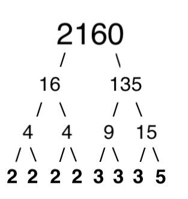
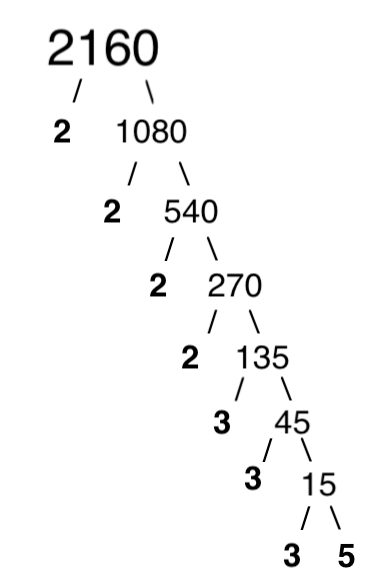
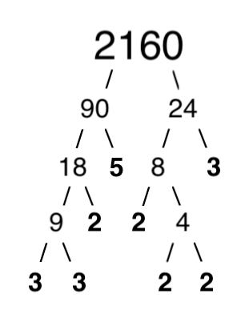

XVIII.
A minute after I began to bike toward Hector’s house, I received a T-T from el generalissimo that said:
WARNING! ANTARCTIC PALACE SECURITY HAS BEEN COMPROMISED! UNSAFE TO APPROACH! RENDEZ-VOUS @ ATTACHED RALLY-POINT.
I biked to the rally point, where I found El Generalissimo Andrew Ramblehurst and Jakob Rums, both in full Antarctic Skout garb. Andrew’s shirt sagged from the weight of all the random medallions and medals he’d pinned onto it. Behind them, an ice cream shop door opened and closed, as individuals entered and exited the business establishment.
“What’s going on? What happened to the palace?” I asked.
“The Penguin Liberation Front performed a heinous act,” Jakob said. “They helped a hostile actor infiltrate the premises and this actor kidnapped the LucidDreamProphet and had him transferred against his will to a [juvenile] psychiatric ward in NorthFieldSpring!”
“Hector?” I said. “He’s been locked up in a looney bin?”
El Generalissimo nodded. “We’re afraid so. All Antarctic property has also been irreversibly damaged and PLF horr’rists – armed to the teeth – have taken up residence. I consulted with my subordinate military leaders and we have made the decision to abandon that location in favour of a more hospitable environment.”
“But we cannot tell you where yet,” Jakob said. Then he tugged on his ears. “The Ears are listening.”
And then we all touched our noses with our index fingers.
“Plus, we have something more time sensitive,” Andrew said. “We have a reconnaissance mission.
At that moment, a robo-uber rolled up. Andrew opened the door. I hesitated but the AAAs encouraged me to follow his lead, so I walked my bicycle over to a suitable area and locked it up. Jakob climbed in first, then I followed, and Andrew climbed in last.
Soon as we were buckled, the robo-uber propelled forward.
“So we’re rolling around in robo-ubers now?” I asked.
Jakob shrugged. “The economy is good right now.”
“For now,” I said. “Where are we going?”
“A yeshian temple in east Dayton. It’s the big one on FS-35,” el generalissimo said.
“And… why?”
“Because,” Jakob said, “it is our fidelitous duty to serve the Antarctic Monarchy in any fashion asked by His Benevolence.”
“More specifically?”
Jakob looked at Andrew.
El Generalissimo stared forward. “Prince-o’-pull Cox will be speaking and we need to collect footage of him. Once we have enough, we can develop a compelling DeepFakeModel of him. Then we’ll obviously have him saying all sorts of preposterousness.”
“I wonder why the AAAs want me here?” I said.
“Strengthen social ties and yadda, yadda, yadda,” el generalissimo said. “How was the anti-democr’cy meeting? Sort of ironic that us monarchists are pushing democr’cy whilst the rebels are pro-AdultAutocracy.”
“Realpolitik be that way,” Jakob said.
The robo-uber rolled up to a nondescript brick building that, nonetheless, looked to be about the height of Cronus’ thinnest section of rings [(i.e. ten meters tall)]. The parking lot was full, as the robo-uber dropped us off. I felt a tad bit nervous, but Andrew and Jakob just charged full-steam ahead so I followed.
“Greetings young men!” a friendly usher welcomed us. “Forgive me, but I’ve never seen you before and our security system doesn’t have a record of you. Would you mind stepping into our security line?”
“Of course,” Jakob said. “No problem whatsoever.”
We stepped through the alternative door, where we went through a series of small spaces, featuring various electromagnetic scans and automatically locking/unlocking doors. “My cousin once got stuck in one of these squares,” Andrew said. “On a military base. Took them four hours to liberate them.”
But the doors continued to unlock as we progressed and eventually we were free to enter the temple. A different usher handed us a paper program and gestured for us to find a location.
Until this point, I had never stepped foot in any yeshian temple whatsoever.
Once we entered the main chamber, we were forced into a queue. As the queue progressed, it became apparent that practitioners were dipping their hands into a high-stylized replica of Yeshi’s cauldron, a glass hemi-sphere set atop a veiled electric conduction heater.
“All are welcome to dip their hands into the cauldron,” a greeter told us, as they minded the station.
“No thank you,” Andrew immediately said.
But Jakob dipped his hands, before shaking off the excess water and wiping his hands on his neck. “Thank you, brother.”
“You’re welcome, brother,” the greeter responded.
So I copy-and-pasted. The water was merely tepid.
“Thank you, brother,” I said.
“You’re welcome, brother,” the greeter responded.
As we walked away, Andrew whispered. “In eurazikka, some practitioners intentionally mutilate their hands by submerging them in boiling water.”
“Well,” I shrugged. “That makes a bit more sense. Yeshi was killed in boiling water, not this lukewarm silliness.”
“They only are mutilated if they’re unpracticed buffoons,” Jakob said. “The serious münks slowly build up a tolerance, with daily practice and a slightly increased magnitude of kinetic energy. Thus they demonstrate their devotion by the high temperatures [to which] they can expose their hands [...] without mutilation.”
“Insane,” Andrew said. He wiggled his fingers in front of our faces. “These babies, they’re important.”
“Less and less everyday,” I said, before I T-T’d them a visual of robotic arms lifting things while humans lay packed away in pods, projecting digital atmans of themselves into different XYZ rooms.
Andrew threw a dismissive hand. “Speculation.” Then he looked back at the other people queued to the dipping hands ritual. “Plus, that is super unsanitary. Wiping your hands on your neck? Didn’t we just go through a plague? Does no one learn anything?”
Folks meandered around, greeting one another. We scanned the room but none of our FaceRecog apps identified Prince-o’-pull Cox, so we walked around the peripheral and looked at the [animal faeces] on the walls. Over and over again, in different forms and media (acrylic paints, stained wood sculpture reliefs, shaped colored glass, et cetera), was the number 2160 being broken down into its prime factors (24 * 33 * 5), albeit in different fashions.
“What the kur’s this?” I asked.
“You seriously don’t know?” Jakob asked.
“Well, obviously they’re prime factor trees. But to what end?”
Jakob laughed. “You grow up under a rock, Xu?”
“No, Rums, I grew up with a rabid[ly] atheist father who made retching sounds whenever he heard anything halfway spiritualSounding. Why’re they displaying endless versions of prime factor trees featuring the composite number 2160?”
“Prime Factor Tree Isomers,” Andrew interrupted. “You’re s’posed to be drawn to the beauty or chaos of different variations. Do you, like, never use your iContact™ functionality?”
“I prefer to be in a perpetual state of wonder,” I said.
Andrew pointed. “I like this one.”

“I like this one,” Jakob said.

I looked around. “Y’all’re boring,” I said. “This one is clearly supreme.”

Jakob laughed at mine. “To each their own,” he said.
“But why 2160 always?” I asked.
From the shelf built into the back of a seating bench, Andrew grabbed a cluster of plastic straws that were connected to be a cube. “Figure it out y’rself, ya vol’ignoramous,” and he tossed the cube to me.
<< PLEASE PROCEED TO YOUR SEATS >> the large LCDTV flashed. I followed Jakob and Andrew to one of the back rows. We sat down and I spun the cube around in my hand. “Ah, I see,” I said. “270 times 8; 24 right angles.”
“South-west-west,” Jakob said.
“What?” I said.
Andrew elbowed me and I looked SSW. There was the BCEC’s new executive leader, smiling and nodding at people as [he] and his wife sat down in the second row from the front.
A bell [rang]. Jakob reached into the shelf and pulled out dice that he rolled onto a horizontal[,] rimmed compartment. He marked on a ledger and then rolled again. Andrew grabbed a dice, shoved it in my hand, and then he started rolling his own.
“What is…” I said.
“Use it or lose it, vol’ignoramous” Andrew said.
I decided to lose it. I looked around the room, saw all the humans, hunched over, rolling dice, and felt an overwhelming, transcendent experience of the absurd. I grinned like an idiot. Roll the dice, mark the ledger, roll the dice, mark the ledger, some roll fast, some roll slow, some hae rhythm, some have none, and then a young man at the front (the only one other than me with his gaze upward), clanged the big bell and the commotion sizzled to a stop.
Jakob collected our dice and tucked ‘em back into the shelf. “You keeping that?” he asked me regarding the drinking straw cube.
“Can I?” I asked.
“Pretty sure,” he said. “Looks like a child made it.”
The temple leaders on the stage donned these stiff cone hats with a wide flat brim. One of them lugged a ginormous copy of the [10 000]-page DivineAnthology and set it atop the lectern. They opened it and sang, “Ahuramazda, emptier of benisons upon every universe, we beseech your glory and guidance.”
“Now and forever,” responded the chorus.
“May the grandness of your magnitude shape the void through which we travel, guiding our trajectory to accelerations beyond our reckoning.”
“As was, as is, as will be,” responded the chorus.
Then the temple leader extended their index finger and pushed a button. A high-pitched tone emitted from the speakers and I frantically covered my ears. Everyone else just sat there, closing their eyes, and resting peacefully as the tone incessantly permeated the room. Eventually, it downshifted and the tone became deeper in pitch. The big LCDTV screen upon the stage showed sand on a glass plate, bouncing around frantically until falling into the nodal lines of rest, forming abstract shapes. Then the tone downshifted again and the sand once again bounced around until it shifted to a new norm. And this progression continued until the tone was so deep that it was inaudible to the human ear. Until, finally, the sand on the glass stopped shaking and shifting whatsoever. And then the LCDTV screen went black.
Khali T-T’d me.
Khali: “Are y’all seriously stalking a black man at his black temple?”
Me: “Not me. El generalissimo is on the reconnaissance mission; I’m just observing as part of our Antarctic ReligiousDiversificationHyperCommodification campaign.”
Khali: “This obsession with creating an antagonist is detracting from the real work necessary to build a student democr’tic movement.”
Me: “I don’t know about that. I used to watch pro ‘rasslin’ when I was a young lad. To manifest the greatness of a hero, you have to create the illusion of a tyrannical alphaMale under conditions that need to be overthrown because they can no longer be tolerated.”
Khali: “Democr’cies don’t need heroes, Xiander.”
Me: “Did you hear that Hector got locked up in a looney bin? I bet you’re happy.”
But Khali didn’t respond. On the stage, the portly gentleman in the conical wide-brimmed hat was reading aloud from page [2 768] of the DivineAnthology. “... and yeshi told the onlookers, ‘Just because the plow is heavy, does not mean you set it down. For it is the heaviness of the plow, which breaks the earth and readies the field.”
“Ugh,” Andrew said. “An agricultural metaphor. What century is this?”
“It’s really a mass metaphor,” Jakob whispered back. “And how mass warps the gravitational field.”
“Commander Rums,” Andrew said. “Are you a subterfuge yeshian?”
“No,” Jakob said. “I believe all religions are equally interesting and equally dodgy.”
The portly gentleman in the hat closed the big book. “Now this apologue is a popular one for reflection. After all, the sheer gravity of life’s inescapables: hunger, death, thirst, pain… can feel overwhelming at times. To progress through life, one needs to make peace with the heaviness.
“But it is more than that,” the man continued. “It is my reading of the text that carrying the so-called plow is about duty. The duty to do the necessary tasks because they need to be done. They may blister our hands, they may make our muscles sore, but WhatNeedsToBeDone needs to be done.”
Andrew sent a T-T with a GIF of an emoji snoring.
“Yesterday,” the man pivoted, “a Shamshounian horr’rist open-fired on [retracted]. The heaviness of these monstrous acts shape the ether through which everything flows. Just as slavery shaped the fabric of our nation, we are being newly shaped by these recurring acts of unpredictable violence. What is one to do? After numerous acts of these kinds, our sectarian governance spent incredible sums to ensure our safety within these walls. Monies that could have gone to the poor, the hungry, the widowed.
“We must do WhatNeedsToBeDone. We must pick up the plow and push forth. There are many that suggest we further change our ways. That we eliminate all publik venues, that everyone arm themselves with EPDs [exothermic propulsion devices], and so on and so forth. Some have even suggested that we clerics eliminate the age-old tradition of shaping our non-truncated hairs into a spiritual antenna for fear that the ignorant will misinterpret it for the unkempt overgrown mane of the Shamshounian.”
Andrew T-T’d: did he really try to make a mass-killing about his coiffure?
Khali, who was obviously channeling, T-T’d a response: “Narcissists gonna narcissist.”